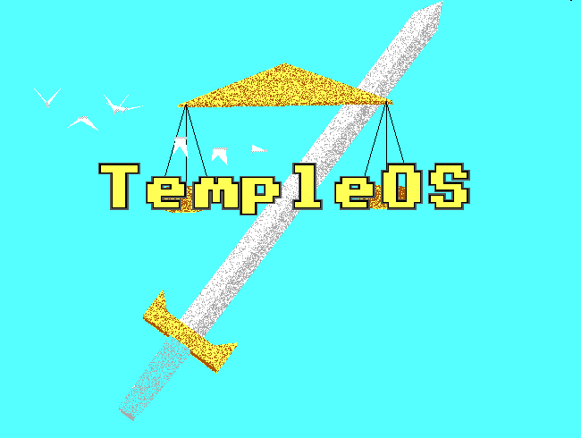
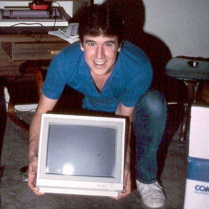
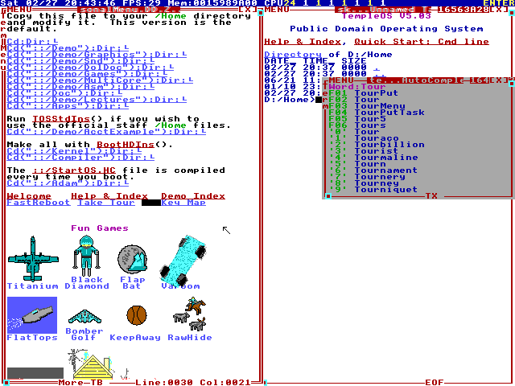

Cette œuvre est mise à disposition selon les termes de la Licence Creative Commons Attribution - Pas d’Utilisation Commerciale - Partage dans les Mêmes Conditions 4.0 International.

Terry A. Davis est un programmeur états-unien atteint de schizophrénie. Il est né en 1969 dans le Wisconsin et est mort en 2018 dans l'Oregon, percuté par un train. Il a un master en électrotechnique et a appris la programmation en assembleur sur un Commodore 64. Il vient d'une famille catholique. Il a été diagnostiqué dans les années 90.

Il commence en 2004 à créer un système d'exploitation nommé J Operating System. Ce dernier serait le troisième temple de Dieu et ses différentes caractéristiques auraient été indiquées par Dieu lui-même à T. Davis. Le projet changera plusieurs fois de nom avant d'être finalement nommé TempleOS en 2013. Le projet est terminé à la mi 2013. T. Davis a développé toute une communauté autour de sa personnalité. Il est aujourd'hui considéré que s'il n'avait pas été atteint de schizophrénie, il aurait sûrement été un des plus grands informaticiens comme Linus Torvalds ou Steve Wozniak.
TempleOS est inspiré du Commodore 64, de DOS et de Turbo C. Il a été créé pour le jeu d'instruction 64 bits x86. Pour TempleOS, T. Davis a créé son propre langage de programmation nommé HolyC. Ce dernier est un entre-deux entre le C et le C++ ; il peut être soit compilé soit interprété. Il a aussi créé sa propre librairie graphique 2D et 3D. L'OS a une résolution de 640 par 480, car selon T. Davis, Dieu le lui aurait indiqué afin que les enfants arrivent à le dessiner plus facilement. TempleOS supporte trois systèmes de fichiers : ISO-9660 pour les CD, FAT32 et RedSea qui est le système de fichiers développé par T. Davis. TempleOS inclut quelques logiciels par défaut, dont un générateur de texte pseudo-aléatoire à partir des mots de la Bible et un simulateur de vol.

Tout le code a été écrit par T. Davis lui-même en dix ans et fait environ 100 milles lignes de code. TempleOS est aujourd'hui dans le domaine public.
TempleOS est généralement considéré comme un exploit, car l'ensemble de l'OS, ses librairies et ses logiciels ont été programmés par un seul homme en moins d'une décennie. En 2017, TempleOS était exposé dans une exposition d'art brut à Bourogne en France. Malgré tous ses problèmes et son langage insultant, due à sa maladie, T. Davis est pour toute une partie de la communauté informaticienne une véritable légende.
Site web : lien
Wikipedia : lien
Fredrik Knudsen : lien